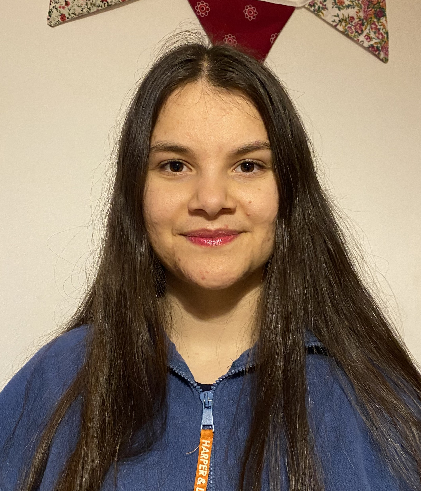
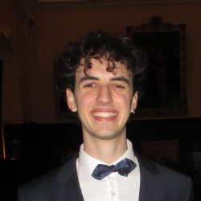
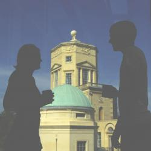

Welcome to University of Oxford SIAM Student Chapter!
.png)
The University of Oxford SIAM Student Chapter is a fast-growing society devoted to facilitating engagement between the University of Oxford’s international applied mathematics community and industry through conferences, workshops, competitions, prizes and other events.
In this way, the Chapter provides a specialised forum in which the finest mathematicians can share a common interest in applied mathematics, scientific computing and industrial applications. The Chapter was founded in January 2008 by a small group of enthusiastic students.
We are now one of the largest chapters worldwide with members including undergraduates, graduate students, post-doctoral researchers, faculty and industrial partners. Our goals include:
- Providing a forum in which students and faculty members can share their interest in applied mathematics and scientific computing.
- Organising internal seminars and workshops for researchers to present their work, and arranging social functions in Oxford at which members can interact in an informal setting.
- Engaging Oxford University members in SIAM’s international community through the conferences, competitions, prizes and other opportunities offered by SIAM.
- Establishing links with industrial partners.
Join Us!
- Subscribe to our mailing list by sending a blank email to siam-student-chapter-announce-subscribe@maths.ox.ac.uk.
- All undergraduates, graduate students, post-doctoral researchers and faculty at the Oxford Mathematical Institute are welcome to participate in our events.
- There are many benefits to be enjoyed as a free student member of the Society for Industrial and Applied Mathematics (SIAM), our mother organisation. Find out more about SIAM membership.
Committee 2026
Thomas Higham
President

Saffron Hooghan-Cormican
Treasurer
Mark Alvares
Secretary
Prof Dominic Vella
Faculty Advisor

Jesus Ait Idir Lahuerta
JAMS Coordinator
Francesco Hrobat
IT and Social Media Officer
Committee 2025
Zoe Godard
President

Saffron Hooghan-Cormican
Treasurer
Thomas Higham
JAMS Coordinator
Cayen Wang
Secretary
Prof Dominic Vella
Faculty Advisor